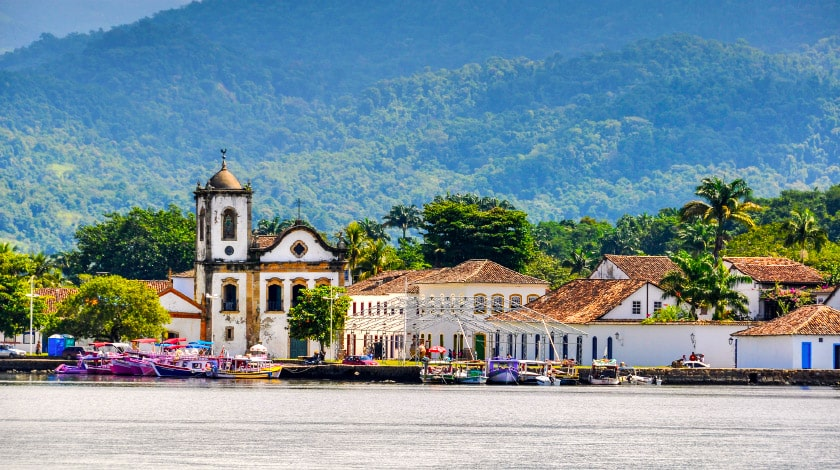

Inicio
Contatos
Mapas
Foz do Iguaçu
Acesse o site dos principais pontos turísticos do Brasil.
Conheça Foz do Iguaçu pelo
Google Earth
Veja Mais.
Cristo Redentor
Ilha Grande

Centro Histórico de Paraty
Avenida Paulista
Parque do Ibirapuera
Pelourinho
Elevador Lacerda
Porto de Galinhas
Lençóis Maranhenses